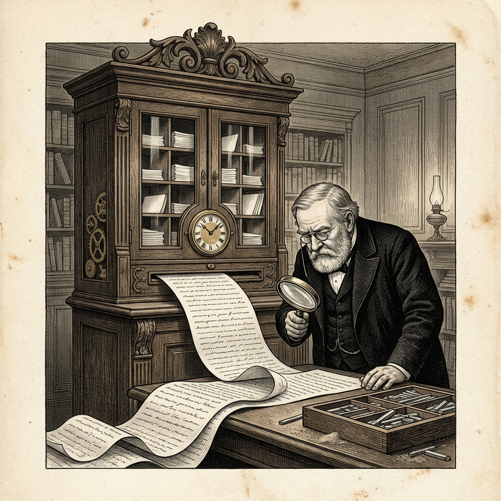

Ur N:r 1 30 september 2026
Tankstrecket på reträtt
Ortens språkvårdare tvingas tänka om

Inom språkvårdande kretsar på orten har det långa tankstrecket länge betraktats som ett säkert tecken på maskinellt ursprung. Mången av ortens skribenter har på denna grund fått sina texter underkända i kommentarsfälten.
Nu meddelar Arena, som för statistik över maskinernas skrivvanor, att maskinen Opus 5.5 från handelshuset Anthropic i det närmaste har upphört med bruket, åtminstone i Arenas egna jämförelser. Där företrädaren Opus 5 satte 15,2 långa tankstreck per tusen ord sätter efterträdaren 0,8. En minskning med omkring 95 procent.
Svaren har samtidigt blivit längre, från i genomsnitt 453 till 481 ord.
Maskinen har således lagt bort det tecken som sades avslöja den. I samma meddelande skriver dock Arena att ”ett nytt kännetecken kan vara på väg”. Garderande ord som ”kanske” och ”kan hävdas” har ökat med 97 procent. Språkvårdarna får hädanefter söka andra bevis. Veckobladet befarar att de kommer att finna dem.
Källa: Arena, ”How Claude Models Write”, 25 september 2026.